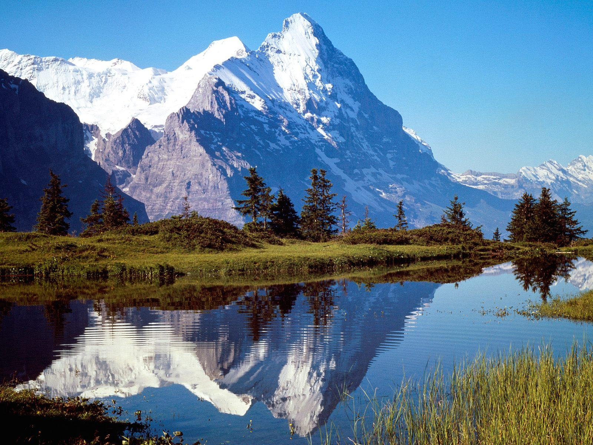
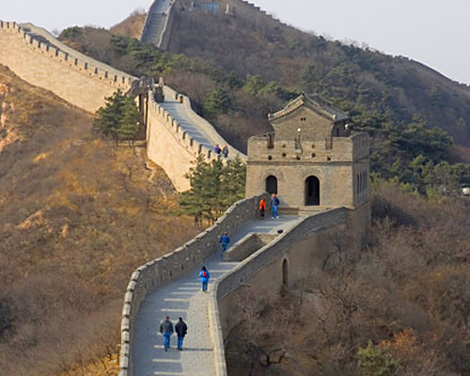
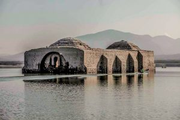

PÁGINA PRINCIPAL

Paisajes NaturalesSon aquellos lugares que los humanos no los han modificado Fecha: 2017/11/06 |

Paisajes creados por el hombreSon aquellos lugares que los humanos han ido creando con los recursos que la naturaleza les brinda Fecha: 2017/11/07 |
||||

Construcciones destruidas por recursos naturalesIglesia de Jalapa del Marqués destruida por las aguas de una presa Fecha: 2017/11/08 |
Construcciones destruidas por recursos naturalesIglesia de Jalapa del Marqués destruida por las aguas de una presa Fecha: 2017/11/08 |